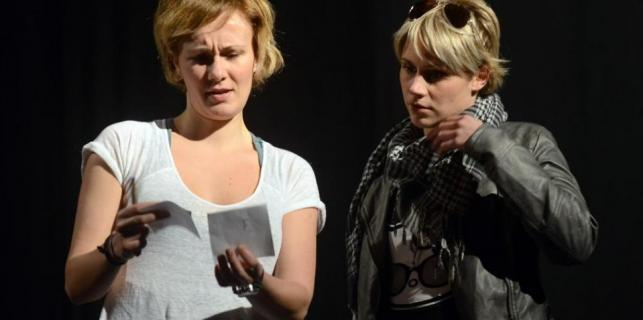
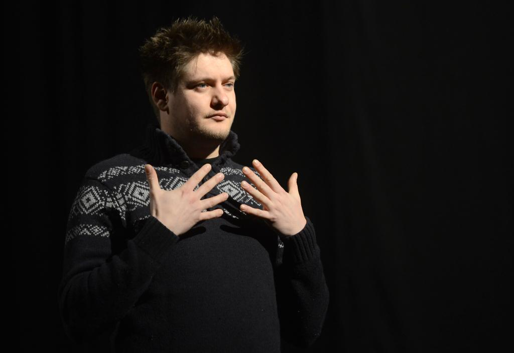

Audicija za film "Ferata za nikamo" redatelja Cristiana Kolacija održana je popodne u Istarskom narodnom kazalištu - Gradskom kazalištu Pula, a na nju se odazvalo 30-ak kandidata.

Sama audicija nije bila zahtjevna - od potencijalnih glumaca tražilo se da poziraju za fotografije, a redatelj je od njih htio doznati koje je njihovo dosadašnje iskustvo te poznaju li istarske dijalekte.
Kolacijo nam je prije audicije kazao da su sve pripremne radnje za film pri kraju te da će se natjecati za sredstva pri Hrvatskom audiovizualnom centru.
Ovo je druga audicija za film, a prvu smo odradili u Rijeci u studenom i na njoj je bilo sedamdesetak kandidata. Budući da ćemo snimati film u Istri bilo je nužno napraviti i jednu audiciju ovdje.

Mislim da će ovo biti zadnja audicija, no ne uspijemo li s njom pokriti sve uloge morat ćemo napraviti još jednu. Za film je gotovo sve spremno - treba još samo dovršiti storyboard - znamo i tko će raditi glazbu i kostime, kazao je Kolacijo.
On je dodao i da se radi o dosta zahtjevnom projektu jer je ideja bila napraviti film čija će se radnja odvijati u Istri te će u njemu biti zastupljeni istarski dijalekti - čakavica, vlaški, istrijotski i istromletački.
Radni naziv filma je "Ferata za nikamo", a bit će sniman na staroj pruzi Lupoglav - Štalije. Prva ideja je bila snimiti western, ali smo se na kraju odlučili napraviti povijesni triler koji ima veze s Istrom. Radnja se odvija početkom 20. stoljeća s dolaskom fašizma. Glavni lik je mladi svećenik koji živi u Taru gdje ga proglase štrigunom, a lokalno ga stanovništvo želi linčovat. On bježi a porečki biskup koji ne želi uplitati lokalne vlasti šalje za njim lovca na ucjene i tu se razvija priča. Bit će tu svega: malo povijesti, istarskog praznovjerja te štriga i štriguna. Film će biti dugometražni, a trebao bi trajati sat i pol, kazao je Kolacijo.
Početak snimanja predviđen je za sljedeću zimu, odnosno kraj ove ili početak sljedeće godine. U filmu će biti 30 uloga koje imaju tekst, a bit će potreban i popriličan broj statista.
B. Vincek; M. Angelini
February 21, 2014
© 2014 Glas Istre